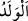
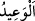
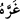
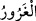

zenginlik ve yeterlilik mânâsına gelir. Nitekim âyette: “O gün kimse başka birine bir
fayda sağlamaz.” (el-Bakara, 2/123) buyrulur.
“
” kelimesi hem öz evlâd hem de torun mânâsına gelebilir. Fakat âyetteki izâfet,
bunun sulbden olan en yakın evlâd olduğuna işâret etmektedir. İnsanın, kendisine en
yakın olan kişi için bile bir şey ödemesi mümkün olmadığına göre, başkası adına
ödemesi hiçbir şekilde mümkün olamaz. Yine bu âyette, babaları ve atalarıyla
övünenlerin ve aralarında îman ve sâlih amel bakımından hiçbir alâka olmadığı halde
onların şefâatlerine güvenenlerin bu mesnedsiz beklentilerinin kesilmesi söz konusudur.
Ayrıca âyette, başkalarını uyarmak üzere baba ile evlâd özellikle zikredilmiştir. Evlâdın
kendi öz babasına şefâati kabul edilmediğine göre, ataları için hiç kabul edilemez.
Âyette önce baba, sonra çocuk zikredilmiştir. Çünkü “ödememe,” babaya göre çocuğa
daha uygun düşen bir durumdur. Ayrıca bu ifâdeler, kâfir olarak ölen babalarına âhirette
faydalı olmayı düşünen mü’minlerin bu arzularına son vermiştir. Bu sebeple bu haberin
yalnızca kâfirlere âid olduğunu söylemişlerdir. Çünkü “Zürriyetlerini onlara
kavuşturacağız…” (et-Tûr, 52/21) âyetine göre o gün mü’min evlâd ve babalar, îman
şartıyla birbirlerine şefâat edeceklerdir.
“Bilin ki, Allâh’ın” haşr, cennet, cehennem, mükâfât ve cezâ ile alâkalı “verdiği söz
gerçektir.” Ondan dönüş yoktur.
“
” hem hayır hem de şer için; “
” ise sadece şer için kullanılır.
“Sakın dünyâ hayatı sizi aldatmasın.” Dünyâ hayatından maksad, onun ziyneti, süsü
ve emelleridir. Yâni dünyânın gönül çeken, aldatan malları sizi aldatmasın.
el-Kâmûs’ta geçtiğine göre, “
” bir kimseyi aldattı ve bâtıl/boş şeylere tama’ ettirdi,
demektir.
et-Te’vîlâtü’n-Necmiyye’de denilir ki: “Şimdi selâmet ve emniyet içinde olmanız sizi
aldatmasın. Çünkü yakında işin sonunda pişman olacaksınız.”
“Ve şeytan, Allâh’ın affına güvendirerek sizi kandırmasın.”
el-Müfredât’ta denilir ki: “
” insanı aldatan mal, şöhret, şehvet ve şeytan gibi
şeylerdir. Şeytan olarak tefsir edilmiştir. Çünkü o, aldatanların en habîsidir. Yâni çok
aldatıcı şeytan, tevbe ve mağfiret ümidi verip sizi günahlara karşı cesâretlendirmek,
kabre dönmeyi unutturmak, kıyâmetin hallerinden ve korkularından gâfil olmaya sevk
etmek sûretiyle kandırmasın.
Yarınki özre yarın var olabilecek ömür gerek.
Sakın bugünün işini yarına bırakma.
Gününü bulunca çalışmaya bak, özür beyan etme.
Keşfü’l-Esrâr’da der ki: “Allah ile aldanmak, ameli kötü olduğu halde O’nun
hakkında hüsn-i zanda bulunmaktır. Bir hadîste şöyle buyrulmuştur: “Akıllı kişi, nefsini
kontrol altında tutan ve ölümden sonrası için amel işleyendir. Âciz kimse ise nefsini